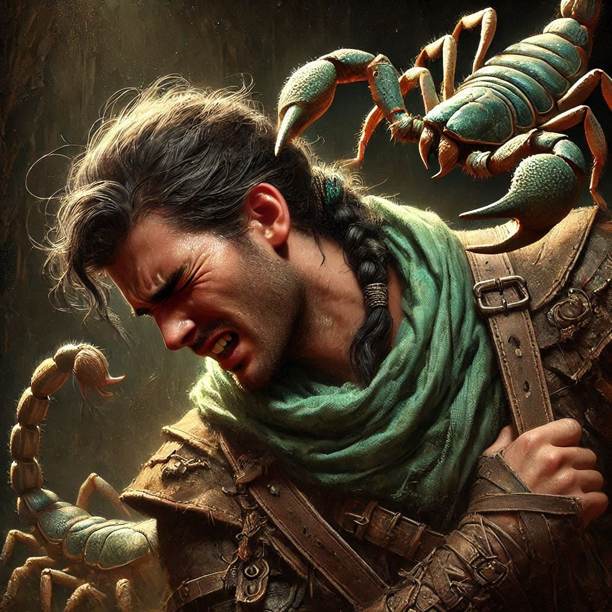
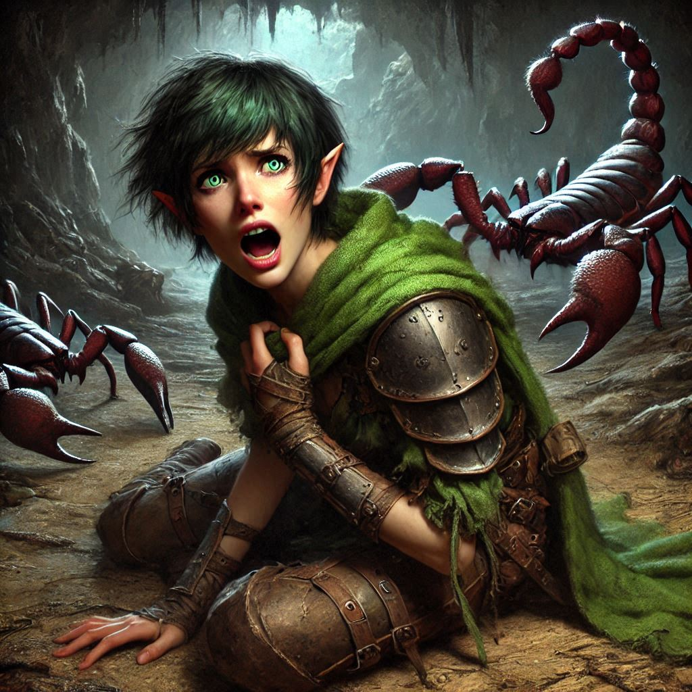

Shortcut... Long Stinger
You glance at the map in your hands, its edges worn and corners curled from being shoved hastily into your pack too many times. The dark ink marks two paths to the chamber of portals—one long, winding, and safe, the other shorter, but dangerous. Time is against you. Varis could already be near the portal, preparing to summon the dark elves from the Realm of Shadows. Every minute counts.
“We’ll take the shorter path,” you say firmly, handing the map to Elias.
He hesitates, his brows furrowed in concern. “Are you sure? We don’t know what could be waiting for us.”
“I’m sure.” You don’t have time to debate it. The weight of your mission presses on your shoulders, heavier than your gear. You’re determined to stop Varis, to end this, and maybe—just maybe—find Jorsh and get some answers. Your feelings for him still twist inside you, an unresolved knot. But there's no room for hesitation now.
Elias nods, though the worry never leaves his face. “Alright. Lead the way.”
You descend into the narrow, winding passage, your footsteps echoing off the slick, stone walls. The air here is thick with dampness, a musty smell that clings to your clothes and hair. Shadows dance across the cavern as your torch flickers, casting eerie shapes on the jagged rocks. Every step brings you deeper into the darkness, deeper into the unknown.
The path grows narrower, the ceiling closing in as jagged stalactites loom overhead. You hear the faint drip of water, the occasional skittering of unseen creatures. Your senses are on high alert. Every shift of air feels like a warning, every sound like a threat waiting to pounce.
Elias walks close behind you, his sword drawn. “Stay sharp,” he whispers, as if speaking louder might wake something slumbering in the dark.
You nod but keep your focus ahead. The tight space is suffocating, and your mind is racing with thoughts of what might come next. The map said this was the faster way—but at what cost?
After what feels like an eternity, the passage widens into a cavernous chamber. The air is heavier here, tinged with an odd, metallic scent. You slow your pace, eyes scanning the ground and walls. Something feels wrong.
“Wait.” Elias’s voice cuts through the silence. He points ahead, and your heart skips a beat.
The floor of the cavern ahead is littered with strange, angular shapes. At first, you can’t make out what they are—until the light of your torch falls upon one of them, glinting off a massive, gleaming tail.
Giant scorpions. Dozens of them.
They lie in the shadows, their armored bodies motionless for now. But you know better than to trust that stillness.
Elias steps forward, his grip tightening on his sword. “We need to move quietly. If we wake them—”
His words die in his throat as one of the scorpions stirs, its tail twitching.
You freeze, your breath caught in your chest. One scorpion is dangerous enough, but this… this is a nest.
You gesture to Elias, urging him to step back, but it’s too late. The nearest scorpion rises from its slumber, its pincers snapping open with a sickening crack. It lets out a low, chittering sound, and the others begin to stir.
“We run,” you say, your voice barely more than a whisper.
But before either of you can move, the first scorpion lunges, its tail arcing through the air, aiming directly for you. You dodge just in time, the venomous stinger slamming into the ground inches from your feet.
“Go!” Elias shouts, swinging his sword to fend off another advancing scorpion. His blade clashes against its armored shell with a sharp, metallic ring, but the creature hardly flinches.
You scramble to your feet, ducking beneath another strike as the scorpions close in. Your heart pounds in your ears. There’s no way out. No time to think. Just fight or die.
You draw your own blade and slice at the nearest scorpion, your sword glancing off its thick exoskeleton. Panic claws at your chest. You’re outmatched.
Elias is at your side, fending off two scorpions at once. His face is pale, sweat dripping down his brow. “We have to keep moving!”
But there’s no room to move. The scorpions surround you, their pincers snapping, their tails coiling like deadly whips.
One of them strikes, its stinger grazing your arm. Pain sears through your body, hot and blinding. You stumble, your vision blurring as the venom takes hold.
“Kira!” Elias shouts, but his voice sounds distant, muffled. You see him fighting, cutting down one scorpion, only for another to take its place.
You try to stand, to keep fighting, but your legs buckle beneath you. The venom spreads quickly, numbing your limbs, sapping your strength. Your sword slips from your fingers, clattering to the ground.
Elias is there, his arms around you, dragging you away from the encroaching swarm. His voice is frantic, but you can’t make out the words. You can barely see his face now, the edges of your vision fading to black.
“I’m sorry…” you whisper, though you’re not sure if you’re speaking to Elias or to Jorsh. Maybe both.
The last thing you hear before the darkness takes you is the chittering of the scorpions, closing in for the kill.
And then—silence.